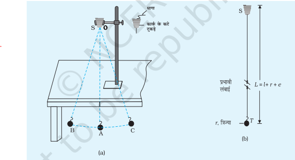
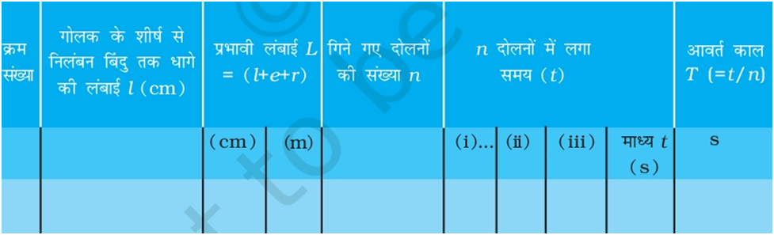
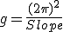

सारणी (सिमुलेशन ):
| क्र. | धागे की प्रभावी लम्बाई (L ) | दोलनों की संख्या (n) | दोलनों में लगा समय (t) sec | आवर्तकाल (T) | T2 |
| 1 | |||||
| 2 | |||||
| 3 | |||||
| 4 |
| क्र. | धागे की प्रभावी लम्बाई (L ) | दोलनों की संख्या (n) | दोलनों में लगा समय (t) sec | आवर्तकाल (T) | T2 |
| 1 | |||||
| 2 | |||||
| 3 | |||||
| 4 |

1. क्लैंपस्टैंड को मेज पर रखिए। लोलक के गोलक में लगे हुक से लगभग 150 cm लंबे धागे का एक सिरा बाँधिए। धागे के दूसरे सिरे को कटी कार्क दो आधे टुकड़ों के बीच से गुजारिए।
2. कटी कार्क को दृढ़तापूर्वकक्लैंपस्टैंड में इस प्रकार कसिए कि कटी कार्क के दो टुकड़ों की पृथकन-रेखा रेखा OA के लंबवत हो जिसके अनुदिश लोलक दोलन करता है। चॉक अथवा स्याही से मेज के किनारे पर उस स्थान एक ऐसी ऊर्ध्वाधर रेखा खीचिए जो गोलक के विराम की स्थिति में ऊर्ध्वाधर धागे OA के ठीक पीछे तथा इसके समांतर हो। यह ध्यान रहे कि ऊर्ध्वाधर स्थिति में गोलक मेज के किनारे से बाहर रहे (फर्श से लगभग 2 सीएम ऊपर) ताकि यह मुक्त दोलन कर सके।
3. चित्र में दिखाए अनुसार सरल लोलक की प्रभावी लंबाई मापिए।
4. गोलक को इसकी ऊर्ध्वाधर स्थिति OA से एक ओर विस्थापित (कोणीय विस्थापन 15° से अधिक नहीं होना चाहिए) करके धीरे से छोड़ दीजिए। यदि आपको लगे कि क्लैंपस्टैंड हिल डुल रहा है, तो उसके आधार पर कोई भारी वस्तु रखिए। यह ध्यान रहे कि गोलक अपनी विराम की (अथवा माध्य) स्थिति OA के परितःऊर्ध्वाधर तल में दोलन आरंभ करना चाहिए तथा इसे दोलन करते समय अपने अक्ष के परितः (1) चक्रण या (2) ऊपर-नीचे गति नहीं करनी चाहिए या (3) अपने माध्य के चारों ओर दीर्घवृत्त में परिक्रमण नहीं करना चाहिए।
5. लोलक को कुछ समय तक दोलन करने दीजिए। जब कुछ दोलन पूरे हो जाएँ तो जैसे ही गोलक अपनी माध्य स्थिति से (मान लीजिए बाएँ से दाएँ) गुजरे विराम घड़ी चालू करिए तथा इसे शुन्य दोलन गिनिए।
6. जैसे ही धागा अपनी माध्य स्थिति OA से उसी दिशा में (बाएँ से दाएँ) दोबारा गुजरे हर बार दोलन की संख्या 1,2,3...n गिनते रहिए। दोलनों की किसी निश्चित संख्या n (मान लीजिए 20 या 25) पर अर्थात् जब n दोलन पूरे हो जाएँ, तो तुरन्त विराम घड़ी को रोक दीजिए। लोलक द्वारा n दोलन पूरे करने में लगा कुछ समय (t) नोट कीजिए। इतनी ही संख्या (n) के दोलन पूरा करने में लगे समय को नोट कर इस प्रेक्षण को कुछ बार दोहराइए। इन पाठ्यांकों का माध्य ज्ञात कीजिए। एक दोलन का समय अर्थात लोलक का आवर्त काल (t/n) परिकलित कीजिए।
7. लोलक की लंबाई में लगभग 10 cm का परिवर्तन करके नयी लंबाई के लिए पुनः लगभग 20 दोलनों के लिए चरण (6) को दोहराइए। 20 दोलनों का समय लगभग 50 s अथवा इससे अधिक होना चाहिए। हर बार विभिन्न लंबाइयों के लिए 5 या 6 और प्रेक्षण लीजिए।
8. प्रेक्षणों को तालिका के रूप में उचित मात्रकों एवं सार्थक अंकों सहित लिखिए।
9. सारणी से प्रेक्षितमानों का उपयोग करके प्रभावी लंबाई L को x-अक्ष के अनुदिश तथा T2 (अथवा T) को y-अक्ष के अनुदिश लीजिए। । L तथा T2 (अथवा T) को इन अक्षों पर निरूपित करने के लिए उपयुक्त स्केल का चयन कीजिए। L तथा T के बीच ग्राफ (चित्र के अनुसार) तथा L एवं T के बीच ग्राफ (चित्र में दिखाए अनुसार) आलेखित कीजिए। L-T2 ग्राफ तथा L-T ग्राफ की आकृतियाँ कैसी हैं? इन आकृतियों को पहचानिए।
१. लोलक के गोलक की त्रिज्या (दी गई)r:…………..cm
२. हुक की लंबाई (e) : …………..cm
३. मीटर स्केल की अल्पतमांक= ………….mm = …………cm
४. स्टॉपवॉच क्लॉक का अल्पतमांक = .......sec

१ . सर्वप्रथम सिमुलेशन को पॉज करिये ।
२ . स्लाइडर की सहायता से धागे की प्रभावी लम्बाई को सेट करिये।
३ . अब सिमुलेशन को प्ले कीजिये।
४ . अब किसी निश्चित दोलनों की संख्या के लिए स्टॉप वाच की सहायता से समय ज्ञात कीजिये।
५ . आवर्तकाल ज्ञात कीजिये ( सारणी के अनुसार ) .
६ . पुनः सिमुलेशन को पॉज करके धागे की प्रभावी लम्बाई को सेट करिये तथा कार्यविधि को स्टेप क्रमांक २ से ५ तक दोहराइये।
७ . धागे की प्रभावी लम्बाई के विभिन्न मानो के लिए आवर्तकाल ज्ञात कीजिये।
८ . सारणी से L-T व L-T2 ग्राफ बनाइये। सिमुलेशन में दिए गए ग्राफ का अध्याय कीजिये तथा आपके द्वारा बनाये गए ग्राफ आलेख से तुलना कीजिये।
९ . L-T2 ग्राफ की प्रवणता से गुरुत्वीय त्वरण निम्न सूत्र से ज्ञात कीजिये :
Licensed under the Creative Commons Attribution Share Alike License 4.0